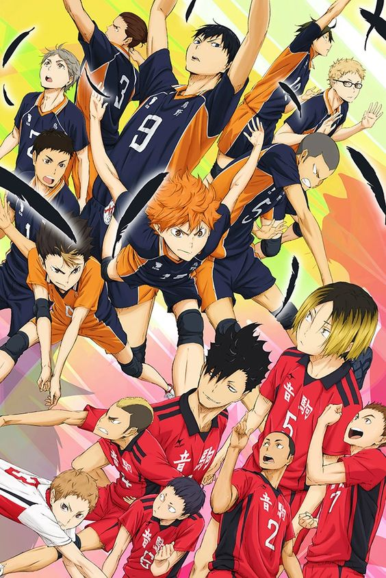

- Inicio
- Personajes
-
Capitulos
Haikyu!!
El estudiante de secundaria, Shōyō Hinata , se obsesiona con el voleibol después de ver por televisión a Karasuno High School jugando en Nationals.
SINOPSIS:
El estudiante de secundaria, Shōyō Hinata , se obsesiona con el voleibol después de ver por televisión a Karasuno High School jugando en Nationals. De baja estatura, Hinata se inspira en un jugador al que los comentaristas apodan 'El Pequeño Gigante', el corto pero talentoso atacante de Karasuno . Aunque no tiene experiencia, Hinata es atlética y tiene un salto vertical impresionante. Se une al club de voleibol de su escuela, solo para descubrir que es su único miembro, lo que lo obliga a pasar los próximos dos años tratando de convencer a otros estudiantes para que lo ayuden LEER MÁS..
a practicar.En el tercer y último año de secundaria, algunos de los amigos de Hinata aceptan unirse al club para que pueda competir en un torneo. En su primer juego oficial, sufren una aplastante derrota ante el equipo favorito para ganar el torneo, que incluyó a Tobio Kageyama , de tercer año , un colocador prodigio apodado 'El Rey de la Cancha' tanto por su habilidad como por su brutal estilo de juego. Los dos provocan una pequeña rivalidad, y después del juego, Hinata promete derrotar a Kageyama en la escuela secundaria. Hinata estudia y es aceptada en Karasuno, la misma escuela secundaria en la que jugó el "Pequeño Gigante", pero se sorprende al descubrir que Kageyama también ha elegido asistir a Karasuno.Se revela que Karasuno perdió su reputación como una poderosa escuela después de la era del Pequeño Gigante, a menudo se la conoce como "Los cuervos sin alas" por otros equipos locales.Sin embargo, al combinar las geniales habilidades de ajuste de Kageyama con el notable atletismo de Hinata, el dúo crea una nueva táctica explosiva de voleibol y desarrolla una inesperada pero poderosa asociación armador-atacante. En el camino, Hinata y Kageyama se empujan mutuamente para alcanzar su máximo potencial, y Hinata desarrolla relaciones con su primer equipo real, comenzando así el viaje de redención de Karasuno para restaurar su reputación y llegar a los Nacionales.LEER MENOS.
CAPITULOS:
Temporada 1
